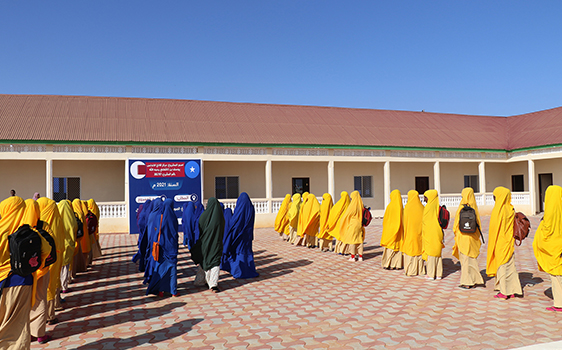
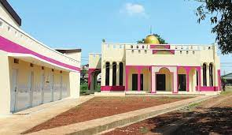

Donate for Project

Water scarcity affects millions of people around the world, and the alarming figures are projected to increase due to
the rise of global temperatures because of climate change. Also, women and children mostly bear the responsibility of
sourcing and carrying their daily water supply. Additionally, school attendance rates among female students tend to
decline due to lack of sanitation facilities.

Recent global data show that there are more than 300 million out-of-school children, mostly in communities affected by
fragility and conflict. This phenomenon is also due to several interlinked challenges, including lack of education
facilities, lack of qualified educational staff, and lack of a safe and convenient education environment

Masjid (the Mosque) is considered to be the community centre for Muslims. It represents the heart of the Muslim family
and community. In Qatar Charity, we make sure to fund the construction of mosques all around the world, knowing that
mosques are not only used for prayers, Quran recitations and Islamic discussions but it is also the place where Islamic
& social ceremonies are held. Donate and give sadaqah to the Mosque Building Fund!